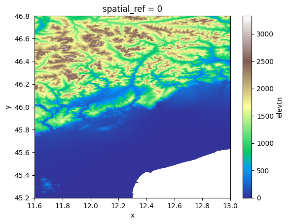

Tip
Example: Reading raster data#
This example illustrates the how to read raster data using the HydroMT DataCatalog with the raster, netcdf and raster_tindex drivers.
[1]:
import hydromt
from hydromt import log
log.initialize_logging()
2026-04-13 13:56:13,760 - hydromt - log - INFO - HydroMT version: 1.4.0.dev0
[2]:
# Download artifacts for the Piave basin to `~/.hydromt_data/`.
data_catalog = hydromt.DataCatalog(data_libs=["artifact_data=v1.0.0"])
2026-04-13 13:56:13,782 - hydromt.data_catalog.data_catalog - data_catalog - INFO - Reading data catalog artifact_data v1.0.0
2026-04-13 13:56:13,783 - hydromt.data_catalog.data_catalog - data_catalog - INFO - Parsing data catalog from /home/runner/.hydromt/artifact_data/v1.0.0/data_catalog.yml
Rasterio driver#
To read raster data and parse it into a xarray Dataset or DataArray we use the get_rasterdataset() method. All driver_kwargs in the data catalog yaml file will be passed to this method. The raster driver supports all GDAL data formats, including the often used GeoTiff of Cloud Optimized GeoTiff
(COG) formats. Tiled datasets can also be passed as a virtual raster tileset (vrt) file.
As an example we will use the MERIT Hydro dataset which is a set of GeoTiff files with identical grids, one for each variable of the datasets.
[3]:
# inspect data source entry in data catalog yaml file
data_catalog.get_source("merit_hydro")
[3]:
RasterDatasetSource(name='merit_hydro', uri='merit_hydro/{variable}.tif', data_adapter=RasterDatasetAdapter(unit_add={}, unit_mult={}, rename={}), driver=RasterioDriver(filesystem=FSSpecFileSystem(protocol='file', storage_options={}), options=RasterioOptions(mosaic=False, mosaic_kwargs={}, cache=False, cache_root='/home/runner/.hydromt', cache_dir=None)), uri_resolver=ConventionResolver(filesystem=FSSpecFileSystem(protocol='file', storage_options={}), options={}), root='/home/runner/.hydromt/artifact_data/v1.0.0', version='1.0', provider=None, metadata=SourceMetadata(crs=<Geographic 2D CRS: EPSG:4326>
Name: WGS 84
Axis Info [ellipsoidal]:
- Lat[north]: Geodetic latitude (degree)
- Lon[east]: Geodetic longitude (degree)
Area of Use:
- name: World.
- bounds: (-180.0, -90.0, 180.0, 90.0)
Datum: World Geodetic System 1984 ensemble
- Ellipsoid: WGS 84
- Prime Meridian: Greenwich
, unit=None, extent={}, nodata=None, attrs={}, category='topography', paper_doi='10.1029/2019WR024873', paper_ref='Yamazaki et al. (2019)', url='http://hydro.iis.u-tokyo.ac.jp/~yamadai/MERIT_Hydro', license='CC-BY-NC 4.0 or ODbL 1.0'))
We can load any RasterDataset using DataCatalog.get_rasterdataset(). Note that if we don’t provide any arguments it returns the full dataset with nine data variables and for the full spatial domain. Only the data coordinates are actually read, the data variables are still lazy Dask arrays.
[4]:
ds = data_catalog.get_rasterdataset("merit_hydro")
ds
2026-04-13 13:56:14,406 - hydromt.data_catalog.sources.data_source - data_source - INFO - Reading merit_hydro RasterDataset data from /home/runner/.hydromt/artifact_data/v1.0.0/merit_hydro/{variable}.tif
[4]:
<xarray.Dataset> Size: 97MB
Dimensions: (x: 1680, y: 1920)
Coordinates:
* x (x) float64 13kB 11.6 11.6 11.6 11.6 ... 13.0 13.0 13.0 13.0
* y (y) float64 15kB 46.8 46.8 46.8 46.8 ... 45.2 45.2 45.2 45.2
spatial_ref int64 8B 0
Data variables:
elevtn (y, x) float32 13MB ...
hnd (y, x) float32 13MB ...
upgrid (y, x) int32 13MB ...
lndslp (y, x) float32 13MB ...
strord (y, x) uint8 3MB ...
flwdir (y, x) uint8 3MB ...
rivwth (y, x) float32 13MB ...
basins (y, x) uint32 13MB ...
uparea (y, x) float32 13MB ...
Attributes:
crs: 4326
category: topography
paper_doi: 10.1029/2019WR024873
paper_ref: Yamazaki et al. (2019)
url: http://hydro.iis.u-tokyo.ac.jp/~yamadai/MERIT_Hydro
license: CC-BY-NC 4.0 or ODbL 1.0The data can be visualized with the .plot() xarray method. We replace all nodata values with NaNs with .raster.mask_nodata().
[5]:
ds["elevtn"].raster.mask_nodata().plot(cmap="terrain")
[5]:
<matplotlib.collections.QuadMesh at 0x7fbfc2270440>

We can request a (spatial) subset data by providing additional variables and bbox / geom arguments. Note that these return a smaller spatial extent and just two data variables. The variables argument is especially useful if each variable of the dataset is saved in a separate file and the {variable} key is used in the path argument of the data source (see above) to limit which files are actually read. If a single variable is requested a DataArray instead of a Dataset is returned
unless the single_var_as_array argument is set to False (True by default).
[6]:
bbox = [11.70, 45.35, 12.95, 46.70]
ds = data_catalog.get_rasterdataset(
"merit_hydro", bbox=bbox, variables=["elevtn"], single_var_as_array=True
)
ds
2026-04-13 13:56:16,985 - hydromt.data_catalog.sources.data_source - data_source - INFO - Reading merit_hydro RasterDataset data from /home/runner/.hydromt/artifact_data/v1.0.0/merit_hydro/{variable}.tif
[6]:
<xarray.DataArray 'elevtn' (y: 1620, x: 1500)> Size: 10MB
[2430000 values with dtype=float32]
Coordinates:
* y (y) float64 13kB 46.7 46.7 46.7 46.7 ... 45.35 45.35 45.35
* x (x) float64 12kB 11.7 11.7 11.7 11.7 ... 12.95 12.95 12.95
spatial_ref int64 8B 0
Attributes:
AREA_OR_POINT: Area
_FillValue: -9999.0
source_file: elevtn.tifTIP: To write a dataset back to a stack of raster in a single folder use the .raster.to_mapstack() method.
Xarray driver#
Many gridded datasets with a third dimension (e.g. time) are saved in netcdf or zarr files, which can be read with Xarray. This data is read using the xarray.open_mfdataset() method. These formats are flexible and therefore HydroMT is not always able to read the geospatial attributes such as the CRS from the data and it has to be set through the data catalog yaml file.
If the data is stored per year or month, the {year} and {month} keys can be used in the path argument of a data source in the data catalog yaml file to speed up the reading of a temporal subset of the data using the date_tuple argument of DataCatalog.get_rasterdataset() (not in this example).
As example we use the ERA5 dataset.
[7]:
# Note the crs argument as this is missing in the original data
data_catalog.get_source("era5_hourly")
[7]:
RasterDatasetSource(name='era5_hourly', uri='era5_hourly.nc', data_adapter=RasterDatasetAdapter(unit_add={'temp': -273.15}, unit_mult={'kin': 0.000277778, 'kout': 0.000277778, 'precip': 1000, 'press_msl': 0.01}, rename={}), driver=RasterDatasetXarrayDriver(filesystem=FSSpecFileSystem(protocol='file', storage_options={}), options=XarrayDriverOptions(preprocess=None, ext_override=None)), uri_resolver=ConventionResolver(filesystem=FSSpecFileSystem(protocol='file', storage_options={}), options={}), root='/home/runner/.hydromt/artifact_data/v1.0.0', version=None, provider=None, metadata=SourceMetadata(crs=<Geographic 2D CRS: EPSG:4326>
Name: WGS 84
Axis Info [ellipsoidal]:
- Lat[north]: Geodetic latitude (degree)
- Lon[east]: Geodetic longitude (degree)
Area of Use:
- name: World.
- bounds: (-180.0, -90.0, 180.0, 90.0)
Datum: World Geodetic System 1984 ensemble
- Ellipsoid: WGS 84
- Prime Meridian: Greenwich
, unit=None, extent={}, nodata=None, attrs={}, category='meteo', history='Extracted from Copernicus Climate Data Store', paper_doi='10.1002/qj.3803', paper_ref='Hersbach et al. (2019)', url='https://doi.org/10.24381/cds.bd0915c6', license='https://cds.climate.copernicus.eu/cdsapp/#!/terms/licence-to-use-copernicus-products'))
[8]:
# Note that the some units are converted
ds = data_catalog.get_rasterdataset("era5_hourly")
ds
2026-04-13 13:56:17,016 - hydromt.data_catalog.sources.data_source - data_source - INFO - Reading era5_hourly RasterDataset data from /home/runner/.hydromt/artifact_data/v1.0.0/era5_hourly.nc
[8]:
<xarray.Dataset> Size: 285kB
Dimensions: (time: 336, latitude: 7, longitude: 6)
Coordinates:
* time (time) datetime64[ns] 3kB 2010-02-01 ... 2010-02-14T23:00:00
* latitude (latitude) float32 28B 46.75 46.5 46.25 46.0 45.75 45.5 45.25
* longitude (longitude) float32 24B 11.75 12.0 12.25 12.5 12.75 13.0
spatial_ref int32 4B ...
Data variables:
press_msl (time, latitude, longitude) float32 56kB dask.array<chunksize=(336, 7, 6), meta=np.ndarray>
kin (time, latitude, longitude) float32 56kB dask.array<chunksize=(336, 7, 6), meta=np.ndarray>
temp (time, latitude, longitude) float32 56kB dask.array<chunksize=(336, 7, 6), meta=np.ndarray>
kout (time, latitude, longitude) float32 56kB dask.array<chunksize=(336, 7, 6), meta=np.ndarray>
precip (time, latitude, longitude) float32 56kB dask.array<chunksize=(336, 7, 6), meta=np.ndarray>
Attributes:
Conventions: CF-1.6
history: Extracted from Copernicus Climate Data Store
category: meteo
paper_doi: 10.1002/qj.3803
paper_ref: Hersbach et al. (2019)
source_license: https://cds.climate.copernicus.eu/cdsapp/#!/terms/licenc...
source_url: https://doi.org/10.24381/cds.bd0915c6
source_version: ERA5 hourly data on pressure levels
crs: 4326
url: https://doi.org/10.24381/cds.bd0915c6
license: https://cds.climate.copernicus.eu/cdsapp/#!/terms/licenc...Raster_tindex Resolver#
If the raster data is tiled but for each tile a different CRS is used (for instance a different UTM projection for each UTM zone), this dataset cannot be described using a VRT file. In this case a vector file can be built to use a raster tile index using gdaltindex. To read the data into a single xarray.Dataset the data needs to be reprojected and mosaicked to a single CRS while reading. As this type of data cannot be loaded lazily the method
is typically used with an area of interest for which the data is loaded and combined.
As example we use the GRWL mask raster tiles for which we have created a tileindex using the aforementioned gdaltindex command line tool. Note that the path points to the GeoPackage output of the gdaltindex tool.
[9]:
data_catalog.get_source("grwl_mask")
[9]:
RasterDatasetSource(name='grwl_mask', uri='grwl_tindex.gpkg', data_adapter=RasterDatasetAdapter(unit_add={}, unit_mult={}, rename={}), driver=RasterioDriver(filesystem=FSSpecFileSystem(protocol='file', storage_options={}), options=RasterioOptions(mosaic=True, mosaic_kwargs={'method': 'nearest'}, cache=False, cache_root='/home/runner/.hydromt', cache_dir=None, chunks={'x': 3000, 'y': 3000})), uri_resolver=RasterTindexResolver(filesystem=FSSpecFileSystem(protocol='file', storage_options={}), options={'tileindex': 'location'}), root='/home/runner/.hydromt/artifact_data/v1.0.0', version='1.01', provider=None, metadata=SourceMetadata(crs=None, unit=None, extent={}, nodata=0, attrs={}, category=None, paper_doi='10.1126/science.aat0636', paper_ref='Allen and Pavelsky (2018)', url='https://doi.org/10.5281/zenodo.1297434', license='CC BY 4.0'))
[10]:
# the tileindex is a GeoPackage vector file
# with an attribute column 'location' (see also the tileindex argument under driver_kwargs) containing the (relative) paths to the raster file data
import geopandas as gpd
tindex_path = data_catalog.get_source("grwl_mask").full_uri
print(tindex_path)
gpd.read_file(tindex_path, rows=5)
/home/runner/.hydromt/artifact_data/v1.0.0/grwl_tindex.gpkg
[10]:
| location | EPSG | geometry | |
|---|---|---|---|
| 0 | GRWL_mask_V01.01//NA17.tif | EPSG:32617 | POLYGON ((-80.92667 4.00635, -77.99333 4.00082... |
| 1 | GRWL_mask_V01.01//NA18.tif | EPSG:32618 | POLYGON ((-78.00811 4.00082, -71.99333 4.00082... |
| 2 | GRWL_mask_V01.01//NA19.tif | EPSG:32619 | POLYGON ((-72.00811 4.00082, -65.99333 4.00082... |
| 3 | GRWL_mask_V01.01//NA20.tif | EPSG:32620 | POLYGON ((-66.00811 4.00082, -59.99333 4.00082... |
| 4 | GRWL_mask_V01.01//NA21.tif | EPSG:32621 | POLYGON ((-60.00811 4.00082, -53.99333 4.00082... |
[11]:
# this returns a DataArray (single variable) wit a mosaic of several files (see source_file attribute)
ds = data_catalog.get_rasterdataset("grwl_mask", bbox=bbox)
ds
2026-04-13 13:56:17,107 - hydromt.data_catalog.sources.data_source - data_source - INFO - Reading grwl_mask RasterDataset data from /home/runner/.hydromt/artifact_data/v1.0.0/grwl_tindex.gpkg
[11]:
<xarray.DataArray 'NL33' (y: 5108, x: 3393)> Size: 17MB
dask.array<getitem, shape=(5108, 3393), dtype=uint8, chunksize=(2998, 2998), chunktype=numpy.ndarray>
Coordinates:
* y (y) float64 41kB 5.177e+06 5.177e+06 ... 5.024e+06 5.024e+06
* x (x) float64 27kB 2.415e+05 2.415e+05 ... 3.432e+05 3.433e+05
spatial_ref int64 8B 0
Attributes:
DataType: Generic
AREA_OR_POINT: Area
RepresentationType: ATHEMATIC
_FillValue: 0
source_file: NL33.tif; NL32.tif